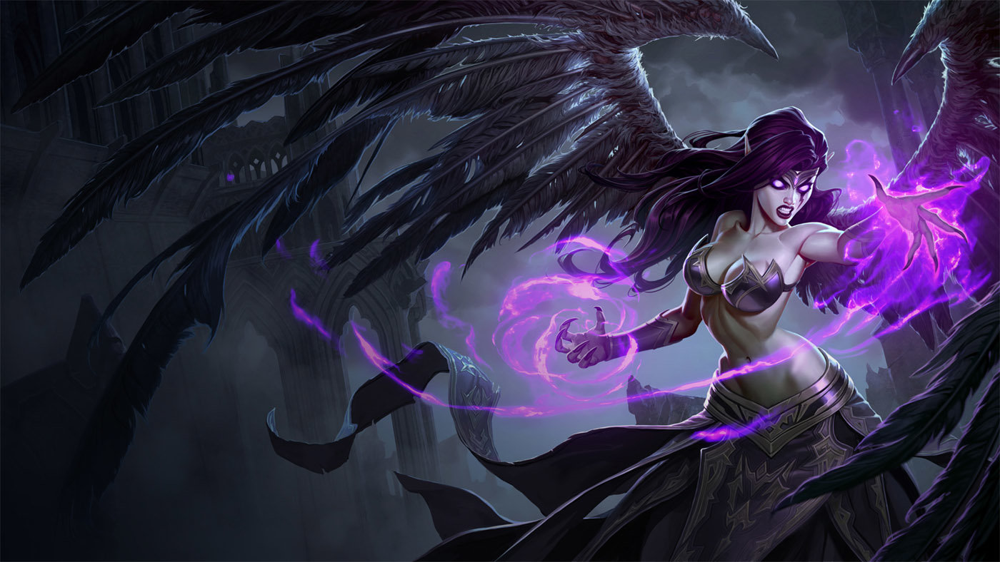

tu devrais essayer morgana

morgana est un personnage très simple, parfait pour apprendre le rôle de support, mais jouable aussi sur la voie du milieu, elle possède un bouclier anti contrôle ce qui la rend puissante à n'importe quel niveau de jeu